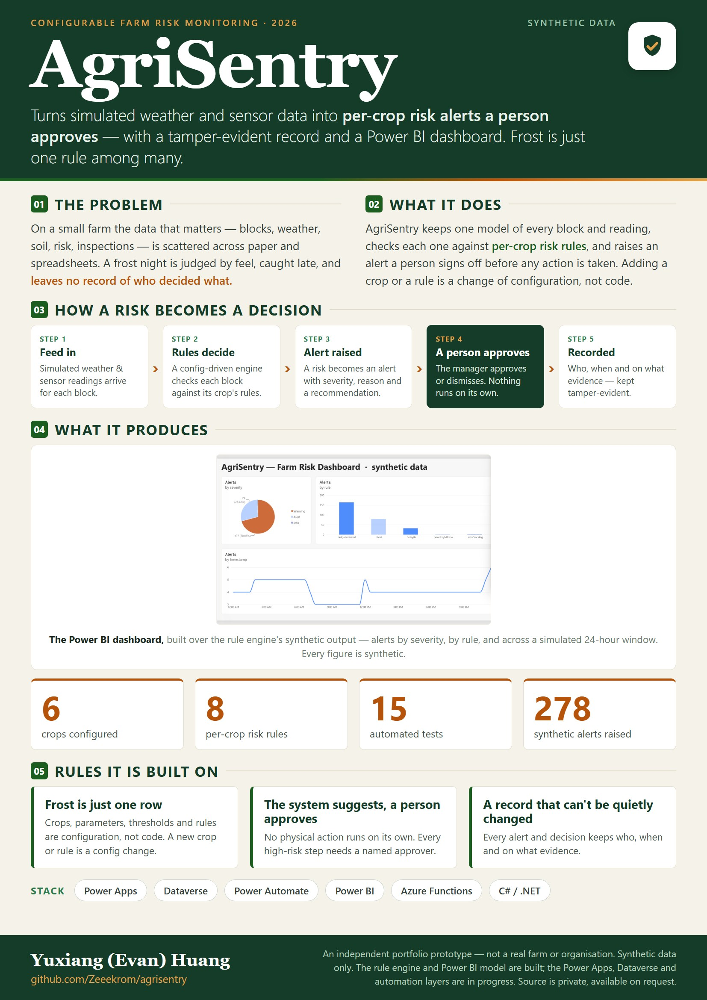

Turns simulated weather and sensor data into per-crop risk alerts a person approves — with a tamper-evident record and a Power BI dashboard. Frost is just one rule among many.
The problem, how a risk becomes a decision, the Power BI dashboard, and the rules it is built on.

One-page overview. Every figure is synthetic.